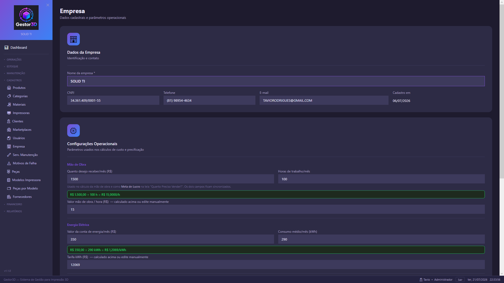

Cadastros
Cadastro da Empresa
Esta rotina concentra os dados cadastrais da empresa e os principais parâmetros usados nos cálculos de custo, preço de venda, imposto, perdas e ponto de equilíbrio.
Quando Usar
Use esta tela quando precisar configurar ou revisar as informações centrais do negócio.
- Após a instalação inicial do Gestor3D.
- Quando houver alteração de nome, CNPJ, telefone ou e-mail da empresa.
- Quando os custos de mão de obra, energia, impostos, perdas ou margem padrão mudarem.
- Antes de iniciar a precificação de produtos, para evitar preços calculados com parâmetros incorretos.
Visão da Tela
A tela Empresa fica no menu lateral, dentro do grupo Cadastros. Ao entrar, os campos podem aparecer em modo de visualização. Para alterar os dados, clique em Editar, no canto superior direito.

Tela Empresa em modo de edição, com dados cadastrais e parâmetros operacionais.
Passo a Passo
- No menu lateral, abra Cadastros.
- Clique em Empresa.
- Clique em Editar para liberar os campos.
- Revise os dados cadastrais: nome da empresa, CNPJ, telefone e e-mail.
- Preencha ou confira os parâmetros de mão de obra, energia, perdas, margem e imposto.
- Clique em Salvar alterações.
- Aguarde a mensagem de sucesso antes de sair da tela.
Campos da Rotina
Dados da Empresa
Nome da empresa *
Campo obrigatório. Ao salvar, o sistema grava o nome em letras maiúsculas.
CNPJ
Identificação fiscal da empresa. O campo aceita máscara de CPF/CNPJ.
Telefone
Telefone comercial ou de atendimento, usado como informação cadastral.
E-mail
E-mail principal da empresa, usado como contato administrativo.
Configurações de Mão de Obra
Quanto desejo receber/mês
Valor mensal desejado para remuneração do trabalho. Também alimenta a meta de lucro da tela "Quanto Preciso Vender?".
Horas de trabalho/mês
Total estimado de horas trabalhadas no mês.
Valor mão de obra/hora
Usado nos cálculos de custo. Pode ser calculado automaticamente ou ajustado manualmente.
Valor mão de obra/hora = quanto desejo receber no mês / horas de trabalho no mês
Configurações de Energia
Valor da conta de energia/mês
Valor médio pago de energia elétrica no mês.
Consumo médio/mês (kWh)
Quantidade média de kWh consumida no mesmo período.
Tarifa kWh
Custo por kWh usado para calcular energia consumida pelas impressões.
Tarifa kWh = valor da conta de energia / consumo médio em kWh
Perdas, Margem e Imposto
Taxa de perda/falha (%)
Percentual médio usado para considerar perdas no custo das peças.
Margem padrão de lucro (%)
Margem usada como referência nas rotinas de precificação.
Imposto por produto (%)
Percentual aplicado nos pedidos e na calculadora de preços.
Cuidados Antes de Salvar
O campo Nome da empresa é obrigatório. Se ele estiver vazio, o sistema exibe uma validação
e não salva as alterações.
Sempre confira os valores de mão de obra e energia antes de cadastrar produtos ou simular preços.
Pequenas diferenças nesses campos podem alterar bastante a margem final.
Use Desvincular esta instalação apenas quando for trocar o servidor/computador.
Essa ação libera a licença para outra máquina e pode interromper o uso nesta instalação.
Ações Disponíveis
Editar
Ativa o modo de edição para alterar dados cadastrais e parâmetros operacionais.
Cancelar
Descarta alterações não salvas e retorna ao modo de visualização.
Salvar alterações
Grava as alterações da empresa e das configurações operacionais.
Refazer configuração de conexão
Apaga apenas a configuração de conexão com o banco e fecha o sistema. Os cadastros não são apagados.
Resultado Esperado
Ao concluir a rotina com sucesso, o Gestor3D deve exibir uma mensagem confirmando que os dados foram salvos.
- Os dados cadastrais passam a aparecer na tela Empresa.
- Os parâmetros de custo ficam disponíveis para precificação e pedidos.
- A mão de obra/hora e a tarifa kWh são recalculadas quando seus campos base são informados.